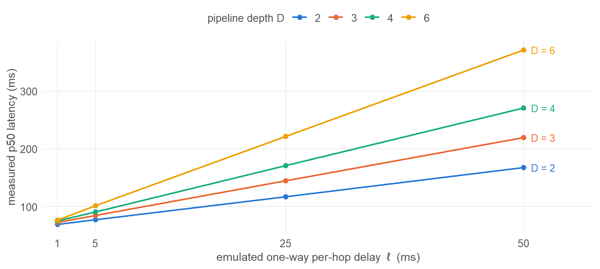
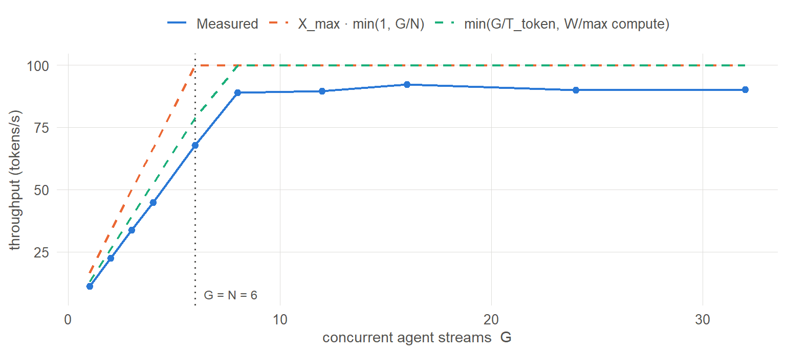
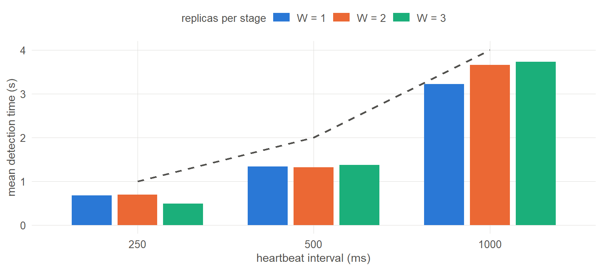
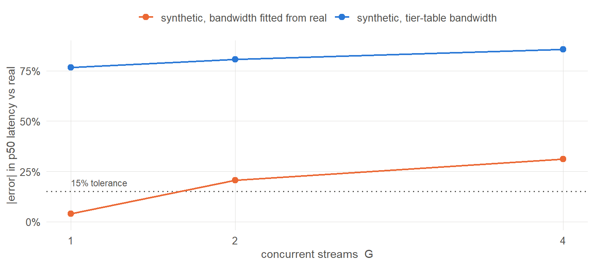

| Experiment | Varied | Held constant | Runs | Engine |
|---|---|---|---|---|
| Delay sweep | D ∈ {2,3,4,6} × ℓ ∈ {1,5,25,50} ms | W=1, G=1 | 16 | container |
| Concurrency sweep | G ∈ {1 … 32} | D=3, W=2, N=6, no faults | 10 | container |
| Failover | W ∈ {1,2,3} × heartbeat ∈ {250,500,1000} ms; then hop timeout | D=3, G=6, one kill at t=20 s | 13 | container |
| Mode check | G ∈ {1,2,4} × {real, synthetic} | D=3, W=1, Qwen2.5-0.5B | 9 | container |
| Report scale | G ∈ {1 … 2000} at N = 1000 | D=50, W=20, 1T MoE | 9 | virtual |
Measuring a pipelined distributed LLM inference network under network faults
An empirical test of a heterogeneous-swarm cost model
Abstract
A pooled swarm of volunteer machines can store a language model that no single member could hold, but theory predicts it can only ever be a throughput engine and never a low-latency one. A companion analysis derives a cost model for such a swarm from first principles; that model had not been tested against a running system. This paper reports an empirical test. A harness of Docker containers standing in for volunteer devices, with traffic-control fault injection and a matched virtual-clock engine for larger pools, was used to run 48 configurations across four experiments. Three of the model’s predictions hold: per-token network cost accumulates at exactly the pipeline depth (measured slopes within 0.2% of \(D\), \(R^2 \approx 1.000000\)); the peak-throughput expression is reproduced to three significant figures at a scale derived independently of this code; and a pipeline’s capacity is set by its slowest stage. One prediction requires correction: the published utilisation ramp \(X_{max}\min(1, G/N)\) is an upper bound whose slack equals the fraction of per-token time spent on the network, overshooting measurement by 32% on a shallow fast-link pipeline and by 1–2% at the scale the model was written for. A closed-loop bound tracks measurement at \(0.88 \pm 0.03\) across a 32-fold range of concurrency. Separately, a deliberate real-versus-simulated comparison shows that simulated timings reproduce real decode latency to 3.9% at a single stream but degrade to 31% at four, because they model neither CPU contention nor prefill cost; this bounds what every simulated result here can support.
1 Introduction
1.1 The promise and the constraint
Pooling many weak, unreliable, heterogeneous machines can store and serve a model that no single unit could hold. Aggregate memory is the one resource such a pool has in abundance: a few thousand consumer machines hold more memory between them than any single accelerator.
The constraint is structural rather than engineering. Autoregressive decoding reads a subset of the model’s weights once per generated token, so inference is bound by memory bandwidth far more often than by arithmetic; and a single generated token must pass through the model’s layers in sequence, so one request cannot be made faster by adding machines. Only more requests can be served at once. A swarm is therefore good at doing a thousand things at once slowly, and bad at doing one thing quickly.
Whether that trade is useful depends entirely on its magnitude, and magnitude is an empirical question.
1.2 What was unknown
A companion analysis derives a cost model for such a swarm and states four governing expressions (§2). Those expressions had never been checked against a running system. Three questions were open:
- Do the predicted latency and throughput laws hold when real packets cross real links, with real serialisation and real queueing?
- What does a node disconnection actually cost, and which parameter controls each component of that cost?
- Can a swarm large enough to matter be simulated, and can the simulation be trusted?
1.3 Contributions
This paper reports:
- A direct confirmation of the model’s network term: per-token latency accumulates at exactly the pipeline depth, to within 0.2% (§4.1).
- A correction to its utilisation ramp, which is an upper bound rather than a predictor, together with the quantity that determines its error and a substitute bound that tracks measurement (§4.2, §4.3).
- A decomposition of failover cost into three quantities governed by three different parameters, with the finding that replication is categorical rather than incremental (§4.4).
- A negative result delimiting what simulated timings can support (§4.5), and a quantified agreement between the two engines that licenses the large-scale results (§4.6).
- An open harness and dataset in which every figure here is recomputed from published data at render time (§8).
2 The cost model under test
Four expressions govern the system. \(N\) devices are arranged as \(D\) pipeline stages with \(W\) replicas each (\(N = D \times W\)); \(G\) independent token streams are in flight; device \(i\) has memory bandwidth \(B_i\); a model has \(P_a\) active parameters per token at \(b\) bytes each; context length is \(s\) with \(q\) KV bytes per token; links have one-way latency \(\ell\), bandwidth \(\beta\), and carry an activation of \(a\) bytes per hop.
\[T_{token} \approx \underbrace{\frac{P_a b + s q}{B}}_{\text{memory-bound compute}} + \underbrace{D\left(\ell + \frac{a}{\beta}\right)}_{\text{network}} \tag{1}\]
\[X_{max} \approx \frac{\sum_{i=1}^{N} B_i}{P_a b + s q} \qquad\qquad X(G) \approx X_{max}\cdot\min\!\left(1, \frac{G}{N}\right) \tag{2}\]
\[X_{pipe} = \frac{1}{\max_k t_k}, \qquad t_k = \frac{W_k b + \mathrm{KV}_k}{B_k} + \ell \tag{3}\]
The decisive feature of Equation 1 is that its first term uses one device’s bandwidth \(B\), not the sum over devices. Adding units cannot shrink it, and the \(D\)-hop term means latency grows slightly with scale. By contrast \(X_{max}\) in Equation 2 grows linearly with device count — but only if enough independent requests are supplied to fill the pipeline, which is what the ramp \(X(G)\) expresses. Equation 3 states that a pipeline runs no faster than its slowest stage, which is where hardware heterogeneity does its damage.
3 Method
3.1 Why a harness rather than a deployment
Testing these expressions on real volunteer hardware would confound the model’s predictions with the idiosyncrasies of whatever machines happened to volunteer. The harness instead runs Docker containers on a single host as stand-ins for volunteer devices, so that composition, link conditions and failures are all set by a scenario file and are repeatable.
This buys control at the cost of realism, and §6 states the limits that follow.
3.2 Two engines
Both engines import the same decision code — cost model, placement, replica routing, membership and death detection, churn generation, and the event schema. They differ only in how time passes and how a message crosses a link.
| Container engine | Virtual engine | |
|---|---|---|
| Clock | real; a stage genuinely sleeps | simulated, advanced by an event scheduler |
| Network | real TCP through tc netem and tbf on a Docker bridge |
analytic delay, jitter, loss, serialisation |
| Scale on this host | ~60 nodes | 1000+ nodes |
| Speed | wall-clock | ~100,000 events/second |
| Status | the measurement of record | used only where §4.6 shows agreement |
The virtual engine exists because this host has 16 GB of RAM, which caps container mode at roughly sixty nodes, while the configurations of interest reach \(N = 1000\).
3.3 Two compute modes
In synthetic mode a stage worker sleeps for the time the cost model predicts and forwards placeholder bytes of exactly the activation size. In real mode it holds a contiguous block of Qwen2.5-0.5B layers, runs them on CPU in float32, and forwards real hidden-state tensors; the gateway performs tokenisation, embedding and the output head. Decoding is greedy so that runs are reproducible and output remains checkable after a failover.
3.4 Tier emulation
Device tiers are emulated relative to each other; one host cannot reproduce a real GPU or a microcontroller. Memory bandwidth and availability drive the cost model, while cgroup CPU and memory limits and tc parameters preserve the tiers’ ratios. §4.5 measures how far the absolute values are from achievable, and the answer is a factor of 6.5.
3.5 Measurement discipline
Three decisions do more for the credibility of what follows than any amount of additional data would.
Predictions carry no fitted correction. An earlier version of this work fitted a per-stage and per-hop overhead term and folded it into the predictions. Agreement improved markedly, to a latency ratio of 1.017. The fit was circular: the stage worker slept bare + configured overhead while the fit measured the residual against bare, so each fit re-absorbed the sleep the previous one had introduced, and successive fits diverged (1.2 → 2.2 → 3.3 ms per stage). Once the circularity was removed the residual proved not to be a constant at all but a function of event-loop load. The correction was abandoned. Predicted values in this paper are the cost model itself, and the measured-to-predicted gap is reported rather than subtracted out.
The median, not the mean, is compared against the model. A hop timeout during a fault places multi-second outliers in the latency sample. In one run the mean was 195 ms against a median of 83.7 ms and a prediction of 76 ms: the mean was reporting stalls rather than latency. Both statistics are published; only the median is a like-for-like comparison.
Nothing is discarded, only labelled. Warm-up and fault-affected rows carry in_steady_state and fault_window flags, so a reader can see exactly what a summary excluded and recompute it differently.
3.6 Experimental design
The delay sweep uses \(W=1\) and \(G=1\) deliberately: replicas would let queueing confound the hop term, and any concurrency above one adds queue wait to the very quantity being decomposed. The concurrency sweep uses no churn, because a stalled stream would appear as lost throughput unrelated to \(G\). Where a constant had to be chosen rather than swept, the choice and its reason are recorded in the published dataset, because a defaulted constant that happens to bind a result is the easiest way to misread a sweep.
4 Results
Every point in every figure below is one complete run: a container stack started from a scenario file, loaded for 45–180 seconds, then torn down and collected.
4.1 Network latency accumulates at exactly the pipeline depth

The relationship is linear over a fifty-fold range of per-hop delay, and the lines fan out by depth. The measurement is the slope of each line, which Equation 1 predicts to be \(D\).
| Depth D | Measured slope (ms per ms) | Predicted (= D) | Error | R² |
|---|---|---|---|---|
| 2 | 2.0013 | 2 | +0.07% | 1.000000 |
| 3 | 3.0039 | 3 | +0.13% | 1.000000 |
| 4 | 3.9930 | 4 | -0.18% | 0.999991 |
| 6 | 6.0113 | 6 | +0.19% | 0.999998 |
Table 3 is a direct confirmation of the \(D(\ell + a/\beta)\) term of Equation 1. Errors are below 0.2% at every depth and the fits are essentially perfect.
The slope is \(D\) rather than \(D+1\) because only the worker link is swept. The path contains \(D+1\) hops — \(D\) stage egresses plus the gateway’s entry hop — but the gateway’s link is held fixed, so it contributes to the intercept rather than the slope.
The practical consequence is a design rule. Moving from \(D=2\) to \(D=6\) costs 17 ms when \(\ell = 1\) ms and 213 ms when \(\ell = 50\) ms. Depth is nearly free on a local network and dominant over wide-area or cellular links: deep pipelines over slow links are the combination to avoid.
4.2 The utilisation ramp is an upper bound, not a predictor

Measured throughput runs at 0.68 of the published ramp throughout the linear region, with a standard deviation of 0.002 across those points. A bias that steady is systematic, not noise.
The cause is an assumption inside the ramp. \(X(G) = X_{max}\min(1, G/N)\) treats \(G\) streams as keeping \(G\) nodes continuously busy, but a stream is idle while its activation is on the wire. The achievable rate for a closed-loop workload is instead the smaller of two classical bounds:
\[X \;=\; \min\!\Big(\underbrace{G / T_{token}}_{\text{delay bound}},\;\; \underbrace{W / \max_k \mathrm{compute}_k}_{\text{capacity bound}}\Big) \tag{4}\]
Note that the capacity bound uses compute time only, not the \(t_k\) of Equation 3, which includes a hop. A node is occupied for its compute; the activation’s transit overlaps with it serving the next token.
| Prediction | Mean ratio | SD | Worst |
|---|---|---|---|
| Published ramp X_max · min(1, G/N) | 0.789 | 0.119 | 0.674 |
| Closed-loop bound (eq. 4) | 0.880 | 0.025 | 0.855 |
Two further predictions hold. The knee is where Equation 4 places it: capacity multiplied by \(T_{token}\) gives 7.8, and the transition from the delay-bound to the capacity-bound regime is observed between \(G=6\) and \(G=8\). And in the saturated regime latency grows purely because streams queue — measured median latency matches \(G/X\) to within 5%, as Little’s law requires — rather than because anything degrades.
4.3 The ramp’s error is the network’s share of per-token time
The ramp’s assumption fails in proportion to how much of a token’s life is spent on the wire. Re-running the concurrency sweep at the scale the companion analysis was written for — 1000 Pi-class nodes, a 1T-parameter mixture of experts at INT4, \(D=50\) — tests that directly, because there a three-second memory-bound compute dwarfs 50 ms of hops.
| Configuration | Network share of T_token | Mean measured ÷ ramp |
|---|---|---|
| This host (D=3, ℓ=5 ms, container) | 21% | 0.789 |
| Report scale (D=50, ℓ=1 ms, virtual) | 1.6% | 0.991 |
At the larger scale the ramp is accurate to one or two per cent. It is therefore not wrong; it is a bound whose slack is the network fraction, and it is an excellent predictor in the regime it was written for.
That run also reproduces three figures derived independently of this code: peak throughput 333.3 against ~333 tokens/s, per-token latency 3.054 s against ~3.05 s, and saturation at \(G \approx N = 1000\). Agreement with an independently derived figure is a genuine check rather than a tautology.
4.4 Failover: three costs, three different parameters
A single replica of a middle pipeline stage is killed 20 seconds into each run. A middle stage is chosen because stage 0 is reached directly from the gateway and the last stage reports back to it, so a middle stage is the case in which an upstream worker must discover the failure.

Detection time scales with the heartbeat interval and is independent of replica count, as Figure 3 shows: the three bars at each interval are near-equal. It is bounded below by the death threshold minus one heartbeat, since the last beat may arrive at any point in the interval.
Detection is not recovery, however, and replicas are not an incremental improvement.
| Replicas W | Detection (s) | Recovery (s) | Requests failed | Requests OK |
|---|---|---|---|---|
| 1 | 1.34 | never | 1155 | 108 |
| 2 | 1.32 | 1.40 | 1 | 339 |
| 3 | 1.37 | 1.40 | 1 | 425 |
At \(W=1\) the loss is categorical. The stage has no surviving replica, so it is gone for the remainder of the run: over a thousand requests fail and recovery never happens. A faster heartbeat does not help, because it detects the loss sooner and there is still nowhere to route. This is the availability expression \(1 - (1-p)^W\) appearing as a cliff rather than a slope, and it is why replication exists for survival before it exists for throughput. At \(W=2\) the same fault costs between zero and three requests out of roughly 328.
Recovery, meanwhile, is governed by the client’s hop timeout rather than by detection. Holding the heartbeat fixed at 500 ms and sweeping the timeout from 250 ms to 5 s moved mean recovery from 1.51 s to 3.93 s while detection stayed flat between 1.43 s and 1.59 s. A stream blocked on a dead node cannot retry until its own timeout expires, however quickly the coordinator noticed.
The practical consequence: detection time, recovery time and failed-request count are governed by three different parameters — the heartbeat, the client timeout, and the replica count respectively. Tuning the wrong one achieves nothing.
4.5 Mode check: what simulated timings can and cannot support
The experiment that licenses every other synthetic result compares real transformer execution against the synthetic model on identical scenarios.

Using the tier table’s nominal memory bandwidth, synthetic mode is wrong by 77–86%. Fitting the effective bandwidth from the real runs instead gives 6.90 GB/s against a nominal 45 GB/s — a factor of 6.5 — and brings single-stream agreement to 3.9%. The memory-bound model of a decode step is therefore sound; the tier table’s absolute values are not achievable speeds.
Agreement nonetheless degrades with concurrency, to 31% at \(G=4\), for a specific and instructive reason.
| Concurrency G | Real stage compute (ms) | Synthetic (ms) | Real ÷ synthetic |
|---|---|---|---|
| 1 | 57.7 | 70 | 0.82 |
| 2 | 68.8 | 70 | 0.98 |
| 4 | 94.7 | 70 | 1.35 |
Synthetic mode also models every token identically and so has no prefill-versus-decode asymmetry, while in real mode the first token of each request pushes all 32 prompt positions through every layer. The combined effect is that synthetic mode over-predicts throughput by a factor of 1.6 to 2.2 even after bandwidth calibration.
This bounds the rest of the paper. Synthetic results are evidence about network and churn effects, which is what they were designed to measure. They are not evidence about a real deployment’s absolute throughput.
4.6 Engine agreement
The virtual engine’s results are worth no more than its agreement with real containers at a scale where both can run. Identical scenarios were run on both engines, with the harness’s own measured overhead equalised per configuration so that what remains is attributable to the engines’ models.
| Axis | Concurrency sweep | Delay sweep | Verdict |
|---|---|---|---|
| Per-token p50 latency | 1.6% | 1.1% | agrees |
| Throughput | 7.0% | 6.2% | over-predicts, knowably |
| Stage compute time | 0.0% | 0.0% | agrees |
| Stage network time | 4.1% | 2.9% | agrees |
| Aggregate queue wait (at saturation) | 5.1% | n/a | agrees |
The engines agree closely on every quantity that composes into latency, and the virtual engine over-predicts throughput by a consistent 6–8% because it has no scheduling jitter and never loses a slot.
Queue wait requires reading by regime. Below the saturation knee there is no queueing to compare and the relative error is an artifact of dividing by nearly zero. Above it the means agree to about 5%, but the distributions differ sharply: at \(G=16\) the container mean is 29.4 ms and the virtual mean 28.6 ms, yet the medians are 22.3 ms and 0.004 ms. The virtual engine’s service and arrivals are both deterministic, so at saturation exactly a third of hops wait about 86 ms and the rest wait nothing — a D/D/1 pattern — while container jitter smears the same total across every hop. The virtual engine may therefore be trusted for aggregate queueing and not for its distribution.
5 Threats to validity
Single replication. Every configuration was run once, on one seed. Nothing reported here carries error bars and run-to-run variance is unquantified. This is the largest outstanding weakness. The tightness of the trends is partial mitigation — the delay sweep’s fits reach \(R^2 \approx 1.000000\) across four depths, which is difficult to obtain from noise — but it is not a substitute for replication.
Single host. Every container shares one machine’s CPU and memory bandwidth. The cgroup limits reduce but do not eliminate the interference, and runs were therefore executed strictly sequentially.
Tier emulation preserves ratios, not absolute speeds. §4.5 measures the gap for tier 2 as a factor of 6.5. Nothing here states what a Raspberry Pi would actually do.
Traffic control is not a home network. tc netem models delay and loss well but not the full behaviour of real links. The virtual engine’s loss model is more optimistic still, charging one round trip per lost segment, which is TCP’s fast-retransmit best case; a tail loss costs a retransmission timeout instead. Loss results from that engine are therefore a lower bound on the real penalty.
No integrity, trust or adversarial modelling. All containers are trusted. The verification questions raised by running inference across independently owned nodes are explicitly out of scope.
Instrumentation defects. Six defects were found and corrected during this work, four of which would have produced plausible but wrong results: a circular calibration; a transport implementation that charged \(2D\) one-way link delays instead of \(D\), which would have doubled the delay sweep’s slope; an unlogged hop that hid in the latency residual; and a server loop that awaited a downstream acknowledgement inside its service time, capping a stage at \(1/(\text{compute} + 2\,\text{hop})\) and producing a convincing but spurious throughput plateau. Each was found by an invariant failing rather than by inspection, which is an argument for instrumenting invariants and not only outcomes.
6 What the data supports
Supported. Network latency accumulates at exactly \(D\), to within 0.2%. The published utilisation ramp is an upper bound whose slack is the network’s share of per-token time; a closed-loop bound predicts throughput to \(0.88 \pm 0.03\) across a 32-fold range of concurrency. The peak-throughput expression reproduces an independently derived figure at \(N = 1000\). Detection, recovery and failed-request count are governed by three distinct parameters. Replication is categorical: \(W=1\) is a cliff.
Not supported. Any claim about a real deployment’s absolute throughput; any claim about tail latency at scale; any claim about specific hardware; any claim about behaviour under adversarial or untrusted participation.
7 Future work
| To establish | What is required |
|---|---|
| That these effects are not noise | The sweeps re-run across several seeds, with confidence intervals |
| Absolute throughput for a real deployment | Real mode at scale, or a prefill-aware synthetic model |
| Behaviour under sustained churn | The random churn model run for hours rather than one scripted kill |
| Tail latency at scale | Containers at scale, or a jitter model in the virtual engine |
| That results survive real networks | Multi-host deployment; traffic control cannot answer this |
The harness is built for these: scenarios are data, runs are repeatable from a seed, and the analysis re-derives from raw event logs in seconds, so adding replications is a matter of machine time rather than of new code.
8 Data and code availability
Harness, scenarios, raw event logs and analysis: github.com/JohnBullDog/swarm-poc-network-fault-harness.
The published dataset contains one row per run with every parameter, prediction and measurement (48 runs), the per-observation tables behind them so any summary can be recomputed rather than taken on trust, and a data dictionary covering all 99 columns with units. Output structure is verified by 12,479 automated assertions covering schema stability, column types, join integrity and completeness.
Every figure and every statistic in this paper is computed from those published files at render time; none is transcribed.
References
The cost model tested here is developed in a companion analysis, which builds on the following.
- Borzunov et al. Petals: Collaborative Inference and Fine-tuning of Large Models. The closest system: transformer blocks distributed BitTorrent-style across volunteer machines.
- Shoeybi et al. Megatron-LM: Training Multi-Billion Parameter Language Models Using Model Parallelism. Tensor parallelism, excluded by design here: its per-layer all-reduce dominates over commodity links.
- Huang et al. GPipe: Efficient Training of Giant Neural Networks using Pipeline Parallelism.
- Narayanan et al. PipeDream: Generalized Pipeline Parallelism for DNN Training.
- Rajbhandari et al. ZeRO-Infinity; Sheng et al. FlexGen. The single-node end of the same bandwidth-bound trade-off.
- Cihangiroglu and Nocera. Activation-drift detection using secret canary inputs.
- VeriLLM. Merkle commitments on intermediate states with sampled rerun verification.
- Wan et al. DAWN (AAAI 2026). Communication-graph synthesis among LLM agents.
Model used in real mode: Qwen2.5-0.5B-Instruct (Qwen team, Alibaba Cloud).